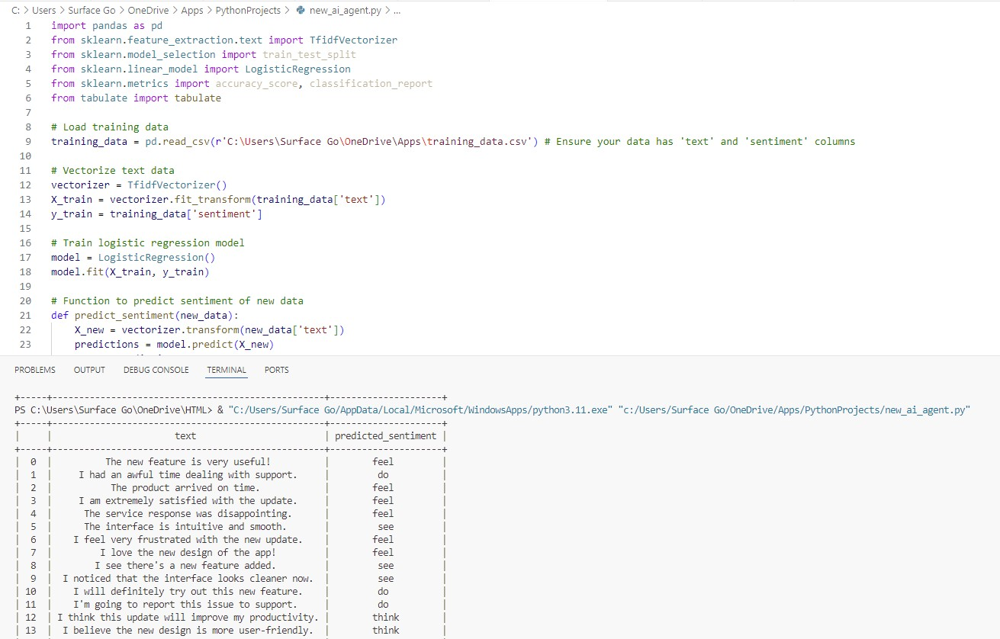

Research
Methodology for Utilzing Artificial Intelligence Model in The Empathize Stage of Design Thinking
Abstract: This reseaerch aims to design a methodology for utilizing artificial intelligence (AI) models in the empathize stage of the design thinking (DT) process. This stage relies heavily on user research, which is time-intensive and subject to biases such
as personal opinions and stereotypes. AI models can analyze large datasets and identify patterns more quickly than humans. However, utilizing AI models in this stage presents challenges, including the selection of appropriate AI models, data
types, model biases, hallucination, and ethical considerations. The study employed qualitative research based on expert interviews to gather insights from industry professionals on the potential and limitations of AI in design thinking. The insights
from the gathered data and reviewed literature were instrumental in developing a methodology that incorporates AI in the empathize stage, visualized using a swimlane flowchart. Additionally, a software-as-a-service (SaaS) platform prototype,
based on the methodology, was designed using Figma, demonstrating practical use cases for AI integration in this stage. A business model was also developed to showcase the value proposition and market potential of the product. The research
represents a paradigm shift in the application of DT and offers practitioners new directions for utilizing AI in the empathize stage, paving the way for more effective and efficient user research and better-designed products and services.
He enjoys playing football on the weekends and is a fan of FC Barcelona. When he is not traveling across Europe, you can find him spending quality time with his close friends. He also enjoys reading novels, with Robert Ludlum and Sebastian Fitzek being his favorite authors. As a deep thinker who delves into the realms of philosophy and consciousness, you may sometimes catch him listening to the teachings of Friedrich Nietzsche, Carl Jung, and the works of ancient Stoics like Epictetus, Seneca, and Zeno. He is friendly and loves pets.
As someone who believes in the power of community and networking, he is a staunch member of the Nigerian Scholars in Germany (NiSIG e.V.) — an association for all scholarly individuals of Nigerian descent residing in Germany. It has its headquarters in Berlin and operates in all 16 Federal States of the Federal Republic of Germany. Francis speaks English fluently, can hold a decent conversation in German, and is currently learning Spanish and French.
Keywords: Design Thinking, Artificial Intelligence, Empathize Stage, Methodology.
Sentiment Analysis Model.
